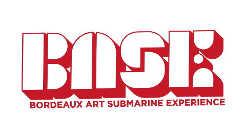
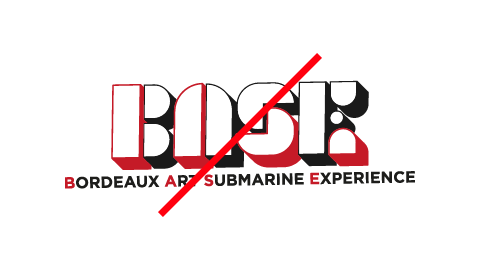
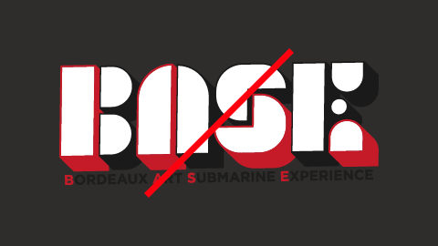

B.A.S.E.
(Student Project)
La Base Sous‑Marine de Bordeaux est à tous points de vue exceptionnelle : par ses proportions, son histoire, sa structure et ses 42 000 m2 de béton. Elle se situe au sein du quartier du Bassin à Flots. La Base Sous‑Marine est désormais un lieu dédié aux arts visuels et à la musique. Le but de ce projet est de lui redonner un réel statut culturel en résonance avec son histoire, et l’inscrire plus largement dans une démarche de valorisation culturelle du Bassin à flots. Pour y parvenir, nous avons décidé de créer la B.A.S.E., acronyme de Bordeaux Art Submarine Experience. Il s'agit d'un lieu d'expositions brut, jouant sur les volumes et s'intégrant parfaitement dans cet environnement urbain. Mêlant art de rue et expérience sensorielle, ce projet propose une nouvelle approche des œuvres ainsi que de la Base Sous‑Marine.
-
The Bordeaux Submarine Base is exceptional from all points of view :
by its proportions, its history, its structure and its 42 000 m2 of concrete.
It is located in the Bassin à Flots district. The Submarine Base is now a place
dedicated to visual arts and music. The goal of this project is to give it back a
real cultural status in resonance with its history, and to include it more broadly
in a process of cultural enhancement of the Bassin à flots. To achieve this, we decided
to create the B.A.S.E., acronym for Bordeaux Art Submarine Experience. It is a place of
raw exhibitions, playing on volumes and integrating perfectly into this urban environment.
Combining street art and sensory experience, this project offers a new approach to the works as well as to the Submarine Base.
Projet en collaboration avec Thomas Charly
Logotype
- Presentation
Ce logotype est complètement inspiré de l'architecture de la Base Sous‑Marine.
Les 11 pièces qui le composent font référence aux 11 hangars de la base. Elles reprennent les formes du toits et des éléments architecturaux présents dans le batiment.
La couleur rouge apporte de la force et de la puissance à l'identité. Elle fait le lien entre le passé historique du lieu, qui servit autrefois pour la guerre, et la passion artistique de son nouveau
statut culturel.
La profondeur du logo correspond à la structure du batiment mais sert aussi à mettre en évidence les nouveaux modules et tout le travail d'aménagement de l'espace apporté pour le bien du projet.
Les maîtres mots de cette identité sont donc : Équilibre / Urbain / Moderne / Force / Brut.
-
This logo is completely inspired by the architecture of the Submarine Base.
The 11 parts that compose it refer to the 11 hangars of the base.
They take the shapes of the roof and the architectural elements present in the building.
The color red brings strength and power to the identity.
It makes the link between the historical past of the place, which was once used for the war, and its new cultural status and the passion of the artists.
The depth of the logo is inspired by the structure of the building but also serves to highlight the new modules and all the space planning work brought by the project.
The key words of this identity are therefore: Balance / Urban / Modern / Strength / Raw.
Logotype
- Research


Logotype
- Construction
Logotype
- Variations
- 

Logotype
- Variations
Logotype
- Sizes
Logotype
- Protection Zone
Colors
- Main Colors
rouge
alizarineRVB 198 / 26 / 39
CMJN 20 / 100 / 90 / 0
Hexa #c61a27
Pantone 186 C
blanc
RVB 255 / 255 / 255
CMJN 0 / 0 / 0 / 0
Hexa #FFFFFF
Pantone 000 C
gris
anthraciteRVB 60 / 60 / 60
CMJN 0 / 0 / 0 / 90
Hexa #3c3c3c
Pantone 412 C
Bans
- 
Tailles
-
Couleurs
-
Position
- 
Contraste
Typographies
Pictograms
Stationery
- Visit Card

Communication
- Advertising Poster
Communication
- Street Marketing
L'utilisation des volumes se poursuit jusque dans la communication. En habillant les différents bloc‑stop de la ville lors d'une campagne de streetmarketing, nous mettons la lumière sur la B.A.S.E. et son nouvel aménagement.
-
The use of volumes continues into communication. By dressing the various block‑stop in the city during a streetmarketing campaign, we shed light on the B.A.S.E. and its new layout.
Social Network
- Posts
Website
Architecture
- Modules
Le cœur du projet se situe dans l'utilisation de modules afin de créer de nouveaux points de vue sur les œuvres. En passant au dessus, voir même au dessous de certaines, la B.A.S.E. ouvre à de nouvelles expériences artistiques.
-
The heart of the project lies in the use of modules to create new points of view on the works. Passing above, see even below some, the B.A.S.E. opens up to new artistic experiences.
 Back to Top
Back to Top